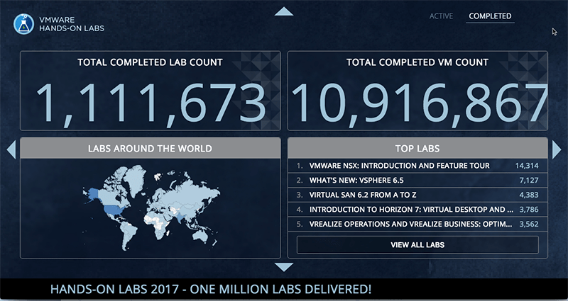
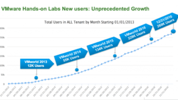
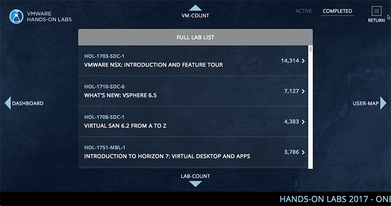
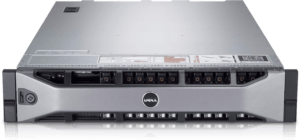
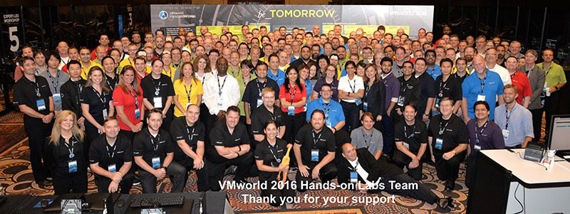
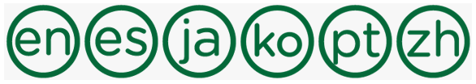
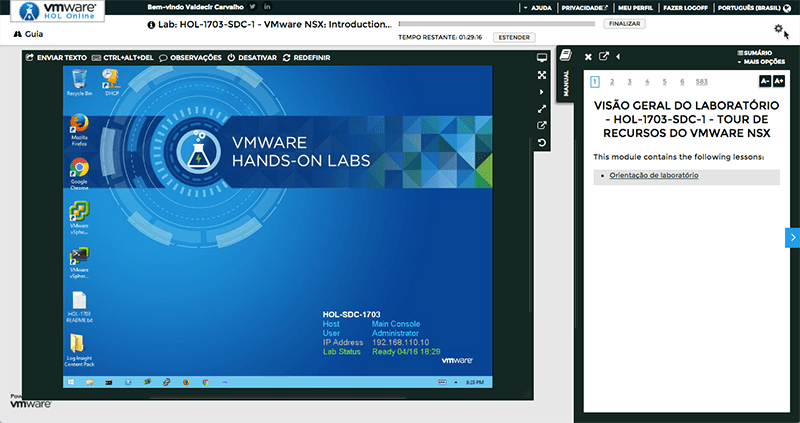

Exclusivo: Por dentro do VMware Hands-on Lab (HOL)
VMwareCompartilhe esse post nas redes sociais...
Olá Homelabers!
Hoje vamos falar sobre o VMware Hands-On Labs (HOL).
Eu já fiz algumas postagens aqui sobre o HOL e posso dizer que sou um grande fã dessa ferramenta.
Na semana passada, tive a oportunidade de bater um longo papo com os responsáveis pelo HOL e descobrir o que Sempre tive a curiosidade de saber o que existe debaixo do capô do HOL.
Então vamos lá!
O que é o VMware Hands-On Labs (HOL)?
O VMware Hands-on Labs é um portal online gratuito criado pela VMware, que fornece acesso aos mais recentes produtos em um ambiente de laboratório virtual baseado em nuvem.
O VMware Hands-on Labs (HOL) pode ser acesso nesse link hol.vmware.com
Números:
Os números do HOL são impressionantes:
* 3 Datacenters
* + 500 servers
* Time fixo de 10 pessoas e mais de 250 voluntários que são no fundo o coração do programa.
* + 1 milhão de labs desde Janeiro '13
* + 10 milhões de virtual machines
* Os usuários em média gastam 51 minutos no laboratório,
* Esses usuários fazem em média 3.7 laboratórios
* São entregues entre 1200 - 1800 laboratórios por dia
* São mais de 70 laboratórios e 400 módulos
* O volume de dados passa de 32 TB por nuvem
Vocês podem acompanhar os números e estatísticas do HOL de forma online no link http://go.hol.vmware.com/live-stats/

O projeto do HOL teve início em 2004 e foi apresentado pela primeira vez durante a primeira VMworld em San Diego.
Em Janeiro de 2013, o projeto foi disponibilizado pela primeira vez ao público.

Top Labs:
Como era de se esperar, o lab mais acessado é o de NSX, e acredito que a principal razão seja a dificuldades em conseguir os “bits para instalação” ou ainda pela quantidade de recursos necessários para executar o NSX em um homelab.

Infraestrutura:
Essa era uma das minha maiores curiosidades. Qual é a infraestrutura que suporta o HOL?
Toda a infraestrutura do HOL é baseada em um modelo de Cloud, com um time interno responsável por manter e gerir tudo referente ao HOL.
Localização:
O HOL está distribuído em 3 datacenters, sendo 2 nos EUA - Santa Clara na Califórnia e Washington State e 1 datacenter na Europa em Amsterdã, Holanda.
Hardware:
Os equipamentos responsáveis por suportar a enorme carga de trabalho são um mix de várias tecnologias. O parque computacional é basicamente formado por servidores Cisco UCS e agora servidores Dell. Na parte de storage são utilizados Storages EMC Extreme IO e VMware vSAN. Os equipamentos são constantemente atualizados.

Software:
A stack de software utilizada para suportar o HOL é basicamente composta de produtos VMware: vSphere 6.0 e 6.5 (em fase de migração) e vApps em conjunto com o vCloud Director.
Automação
Como era de se esperar, a base do HOL é a automação, pois para suportar uma carga de trabalho tão grande, automação e ferramentas de automação são fundamentais.
O grande desafio é o deploy de novos labs e a replicação entre datacenters. As principais ferramentas utilizadas são scripts em Powershell e PowerCLI em conjunto com o VMware vCloud Director.
O Time:
O time do HOL bastante grande, contando com um aproximadamente 10 pessoas fixas que cuidam de toda a sustentação do ambiente, suporte, desenvolvimento de novos labs, marketing, divulgação, etc. Existe também um outro time que não é fixo, que conta com mais de 250 pessoas focadas no desenvolvimento de novos labs.
No Brasil, temos uma pessoa que faz parte do time do HOL. É o Danny Farber, que supervisiona todas as necessidades da América Latina referentes ao HOL. Ele, em conjunto com a equipe internacional, são responsáveis pelo desenvolvimento da estratégia da LATAM + Brasil e tem um papel ativo na garantia de que os Laboratórios em manuais estejam localizados para os usuários brasileiros.
Os principais membros do time do HOL são (sigam esses caras no twitter):
Pablo Roesch - Director Technical Marketing - @heyitspablo Doug Baer (AKA Trevor) - @dobaer Andrew Hald - Consulting Architect - @vmxl Dave Rollins - Content Architect - @vmwdave

Processo de seleção de conteúdo:
De acordo com Pablo Roesch, a escolha de novos conteúdos são feitas com base na demanda das BU (Business Units), releases de novos produtos e demanda dos usuários.
Novos conteúdos sempre são lançados para a VMWorld e o time trabalha o ano inteiro desenvolvendo novos labs.
Eles começaram a trabalhar no novo catálogo de 2017-2018 agora. Muitas novidades deverão aparecer até a VMworld ‘17 (eles não puderam contar) mas eu aposto que o BOOM será um lab de VMware com AWS.
https://twitter.com/VMwareHOL/status/852200815938949120
Catalogo de Labs
O catálogo completo do HOL conta com mais de 160 labs disponíveis em Inglês, Português, Japonês, Espanhol, Chinês e Coreano.

Labs em Português
Atualmente existem 06 laboratórios traduzidos para o Português no catálogo do HOL:
HOL-1701-USE-2-PT - vRealize Operations e vRealize Business: otimizar utilização de processamento
HOL-1703-SDC-1-PT - Tour de recursos do Vmware NSX
HOL-1703-SDC-4-PT - Passo a passo da instalação VMware NSX
HOL-1708-SDC-1-PT - Introdução ao Virtual SAN
HOL-1710-SDC-6-PT - O que há de novo: vSphere with Operations Management
HOL-1757-MBL-3-PT - Introdução à integração do Workspace One com o VMware AirWatch

Video do Danny Farber explicando como funciona o HOL
[embed]https://youtu.be/O04Ln5qRkCQ[/embed]
Gostaria de deixar aqui o meu muito obrigado a todo o time do HOL, principalmente ao **Pablo Roesch, **que prontamente respondeu meu tweet, entrou em contato comigo e marcou o conference call, mobilizando várias pessoas importantes da comunidade e que trabalham diretamente com o HOL.
Vou deixar aqui alguns links referentes ao HOL, que valem a pena serem vistos com calma:
* Blog do HOL - [https://blogs.vmware.com/hol/](https://blogs.vmware.com/hol/)
* Twitter do HOL - [https://twitter.com/@VMwareHOL](https://twitter.com/@VMwareHOL)
* [Comunidade do HOL no VMTN](https://communities.vmware.com/community/vmtn/resources/how/content?filterID=contentstatus%5Bpublished%5D~objecttype~objecttype%5Bthread%5D)
* [Episódio do VMware Community Roundtable Podcast sobre o HOL](http://talkshoe.s3-website-us-east-1.amazonaws.com/TC-19367/TS-1159314.mp3)
E para finalizar, se ficou alguma dúvida, alguma curiosidade que não apareceu aqui, fiquem a vontade para me escreverem ou ainda, entrar em contato diretamente com o pessoal do HOL. Eles mostraram um interesse bastante genuíno sobre o Brasil, seus usuários e suas necessidades, ou seja, nós, então chegou a hora de aproveitar esse canal aberto e fazer contato.
Pesquisa:
A equipe do HOL me pediu para ajudá-los a descobrir quais conteúdos são relevantes para o público brasileiro e quais os labs que vocês mais gostam. Peço que por favor, preencham a pesquisa abaixo, pois irei compartilhar os resultados com eles. Essa é a nossa chance de poder contribuir e melhorar essa ferramenta incrível. Conto com vocês!
Carregando…
Compartilhe esse post nas redes sociais...Valdecir Carvalho
Nerd e pai orgulhoso da Mariana e João. Profissional Sênior de TI com foco em arquitetura de infraestrutura e cloud computing. Blogueiro, podcaster, palestrante, amante de comunidades técnicas, fotógrafo aposentado e adora jogos antigos.
#vExpert · #VMUGLeader · #VUGBrasil · #vBronwBagBrasil · #VeeamVanguard